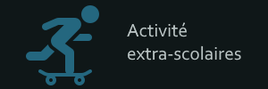

About Me
containerPP
Personal Profile :
I’m Ferreol MONTANARO, 18 years old and currently live in Toulouse even though I’m from the Auvergne Rhone Alpe region. Since the beginning of this year, I’m following a BUT which is a french degree in the technological field. The one I’m following is specialized in networks and telecommunication at the IUT of Blagnac right next to Toulouse.
My choice for these particular studies matches my personal interests, indeed, I’m particularly interested in new technologies and am a space and engineering innovation enthusiast as well. Not to mention that I also enjoy traveling a lot and practice sports. Both of those activities make me an openminded and sociable person. Furthermore, the discovery and interest toward foreign culture in addition to sportsmanship make me able to work with a diversified team in my personal or professional project.
To conclude, I’d like to bring then attention on a quote I’ve found while watching the show Rick and Morty. It is “Sometimes science is more art than science.”. Which in my opinion represents the fact that science is above complex algebra or people in white scientist blouses, it is a way to communicate and to make humanity go forward.
centre d’intérêt

In my free time, I enjoy spending time using Virtual Reality. It can be either to play video games or to discover what this futuristic piece of tech can offer us. Indeed, VR is a relatively new technology. It’s only been a few years since those impressive headset are easily find-able by any potential user thanks to the industrialization of this hardware. I also particularity enjoy learning and discovering the future innovation in this industry by always staying informed on the subject.
video
This animation as been made by an A.I. thanks to one sentence only.
Indeed, this A.I. developed by OpenAI is capable of “imagining “ an animation from a sentence given by the user such as “futuristic world cloud city“ in this example.
Learn more ...
ExtrraScolaire
Activités extra-scolaires : Outside of school and in general of the Tech world, I practice parkour. It is a sport based on the “art of movement.” The objective of this sport is to go from a point A to a point B either as fast as possible or with the most stylish and impressive figure. I also enjoy skateboarding, mainly to travel for short distance.
ChoixBUT

I've chosen to start my studies in a BUT R&T because computer science as always been a really interesting subject to me. Furthermore, the R&T Department give the opportunity to learn about Cybersecurity which is in my opinion offer a particularly fascinating field of knowledge.